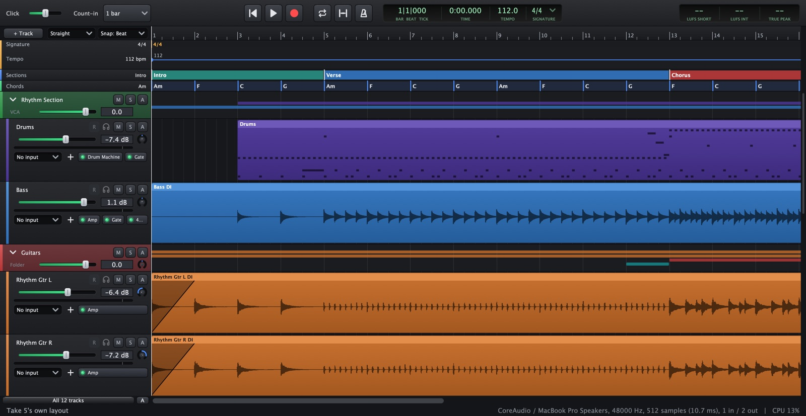
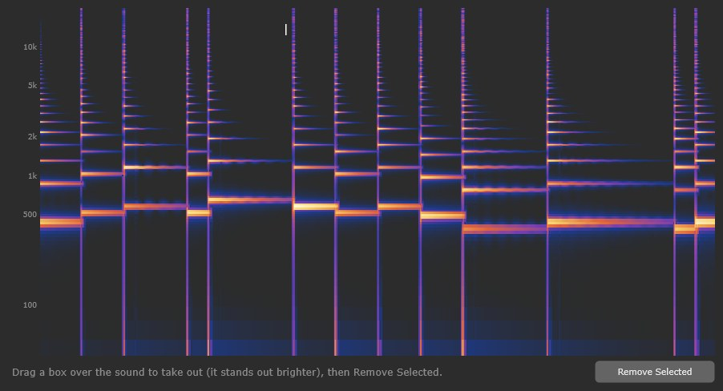
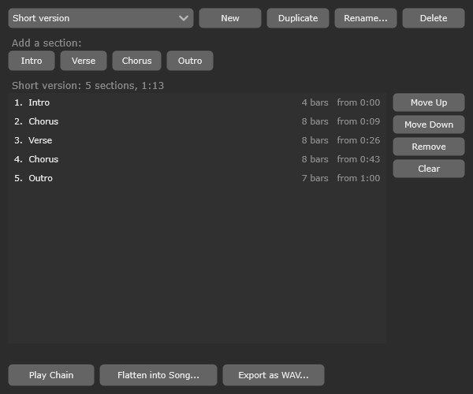
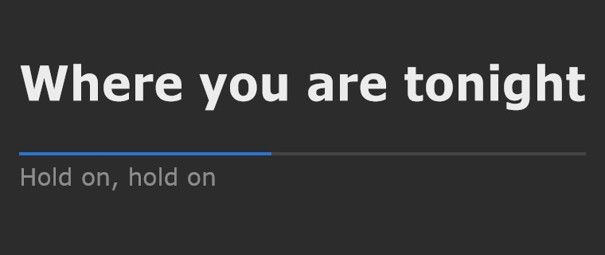
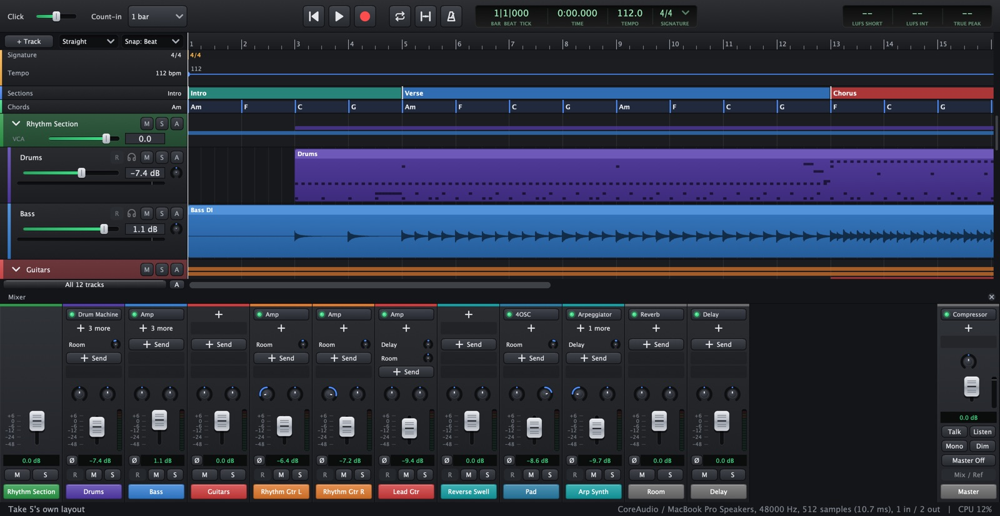
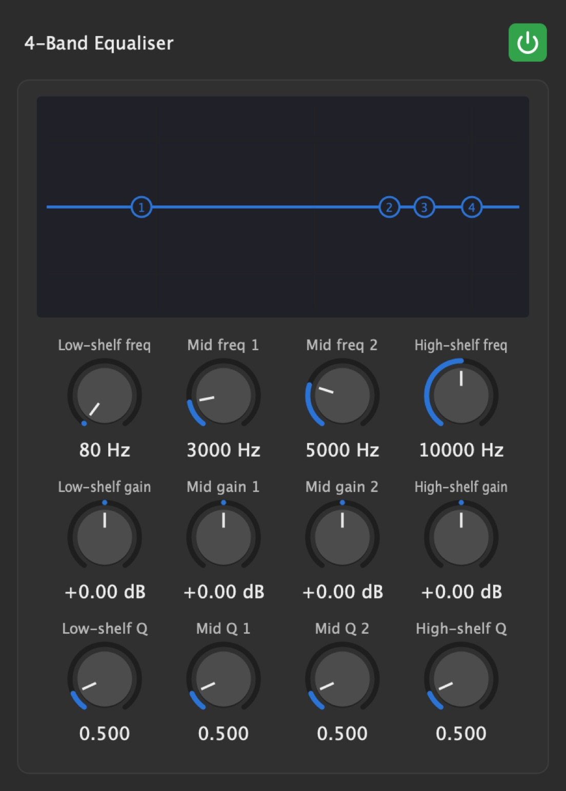

Take 5 is an open-source music studio (a DAW) for Mac and Windows, made for bands and songwriters: record a whole band or yourself take by take, comp the best takes, edit audio and MIDI, write with built-in instruments, drum kits and a session drummer, mix with built-in effects, guitar amps and NAM captures of real gear, and master to streaming loudness against a reference track. Its layouts and key sets can work the way you're used to, and an assistant makes changes when you ask in plain words.
This sheet has the keys and steps to take a song from the first idea to a finished file. Keys are Take 5's default set. Single-letter keys work whenever you're not typing in a box, and almost everything can be undone with CtrlZCmdZ.
Set up the sound once, learn a dozen keys, and know where everything is on screen.

Takes are saved in the song's Audio folder, and the song saves itself after every take.
Click the headphones button in the track header to cycle:
You hear the input through the track's plugins, so you can play through the Amp. Hear a delay? Lower the buffer, or turn on .
Headphone mixes per player: . Talk to them with Y (the mic is set in ; it's turned down while recording).
A stereo source (amp modeller, keys, overheads) on one track: its input menu > Make Input 1 + Input 2 One Stereo Input.
plays 1 or 2 bars first so you can play yourself in.
Sing in tune while you record: Live Tune on the armed vocal track.
The click is never in an export.
Takes land late? Connect a cable from an output to an input, then > Measure. Take 5 corrects every recording from then on.
Tighten, tune and clean up what was recorded. Every edit is one undo step, and the recordings themselves are never changed.

Sketch the song before (or after) the band plays it: instruments, a drummer, chords, lyrics, and the order of the sections.
In the piano roll, on the selected notes:


Press X for the mixer (or click its ×, top right, to close it). or to place it.

-6, L30, 120%Select a track, : a Gate, EQ and Compressor before the fader.
: a Console on every channel and the mix, rounding off peaks with a little warmth. Its Drive sets how much; the same command takes them off.
Stems from another studio? colours them and gives each an icon.
Put a Compressor on the bass, right-click its slot > Sidechain From > the kick track.

Built in: Amp, Capture Player (NAM captures, TONE3000), Overdrive, Fuzz, Octaver, Pitch Shifter, EQ, Dynamic EQ, Saturator, Low Pass, Compressor, Multiband Compressor, Gate, Transient Shaper, Limiter, De-esser, Level Rider, Doubler, Live Tune, Reverb, Convolution Reverb, Delay, Chorus, Phaser, Flanger, Tremolo, Auto-Pan, Auto-Filter, Hardware Insert, Channel Strip, Split.
Make the finished mix loud enough, check it against a song you like, and export it.
| For | Target | True peak |
|---|---|---|
| Streaming services and video sites | −14 LUFS | under −1 dBTP |
| Podcasts, a gentler master | −16 LUFS | under −1 dBTP |
| Broadcast (TV, radio) | −23 LUFS | under −1 dBTP |
No sound: Audio Settings > Test; check Dim is off and nothing is soloed ().
Crackles: raise the buffer size; freeze heavy tracks; on Windows use ASIO.
MIDI keyboard silent: play an armed instrument track; check it's ticked in .
Stuck notes: , or double-click the play button.
Space or R does nothing: you're typing in a box. Click an empty part of the tracks.
Lost work: lists earlier saves to listen to and restore. Take 5 also keeps a recovery copy every 2 minutes.
Every feature, step by step: all 207 tasks from Take 5's user guide, in seven parts, with screenshots. Search above, or pick a part.
Installing, the window and its parts, the audio interface and MIDI, and making Take 5 look and work your way.
Recording yourself or the whole band: inputs, the click and count-in, punch and loop recording, then choosing the best of the takes.
Tracks and how they're organised, editing audio clips, and arranging the song: sections, markers, tempo and the timeline.
Instruments, the piano roll, chords, the arpeggiator and the drum machine, drum patterns and the session drummer.
The mixer, sends and buses, automation, and every built-in effect, amp and plugin.
Mastering against a reference, exporting, sharing a song with the band, and backups and history.
The assistant, what to do when something's wrong, and how Windows and the Mac differ.